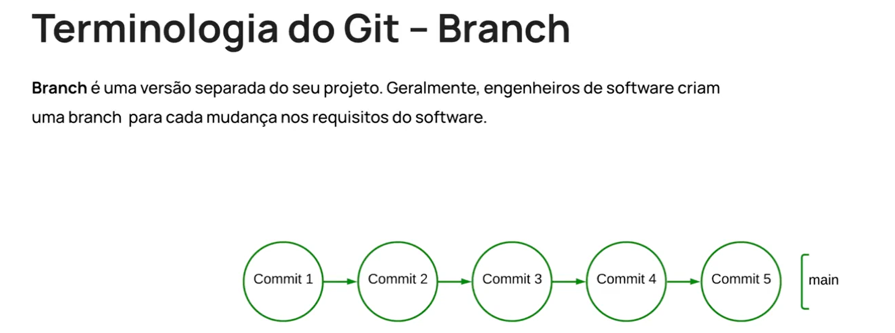
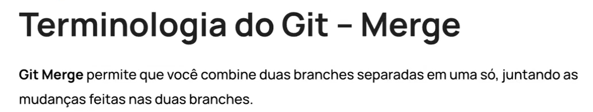

Introduction - What is Branches and How to use Them
Intro
Aqui iremos ver sobre uma das principais funcionalidades do Git as Branches
Aqui iremos ver sobre uma das principais funcionalidades do Git as Branches
Ela permite que uma equipe trabalhe em diferentes partes do projeto sem risco de quebrar o codigo principal

Geralmente em um projeto temos uma branch principal chamada de main ou master. Sendo proibido que as pessoas facam mudancas diretamente nessa branch principal, pois pode acabar havendo risco de quebrar o codigo.
Trabalhamos com ela para podermos mexer em nosso codigo sem mexer no codigo pricipal (main/master).
Como exemplo teremos dois funcionarios, um esta corrigindo bugs e outro adicionando funcionalidades novas, cada uma delas ira trabalhar em uma branch separada, fazendo seus commits separadamente. Assim conseguindo trabalhar de forma paralela sem um prejudicar o codigo do outro.
